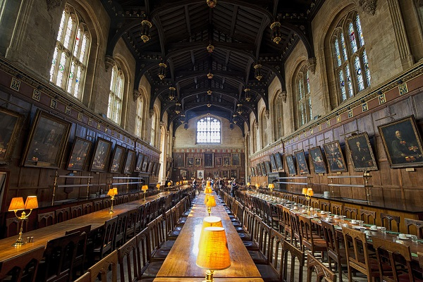

|  |
ABOUT US
For more than 140 years, the howard University school of law has served as an advocate for social justice and as an architect of social change. It has produced more than 4000 social engineers including the first african supreme court justice, civil right attorneys, mayors and publics officials the University Of Oxford's distinctive structure, born. Its history is a source of strength. Oxford is the collegiate university, consisting and collegeaus. The central university is composed of academic department and research centre. THere are six permanent private halls, which are founded by different christian demonistation and which still retains there christian character.
|